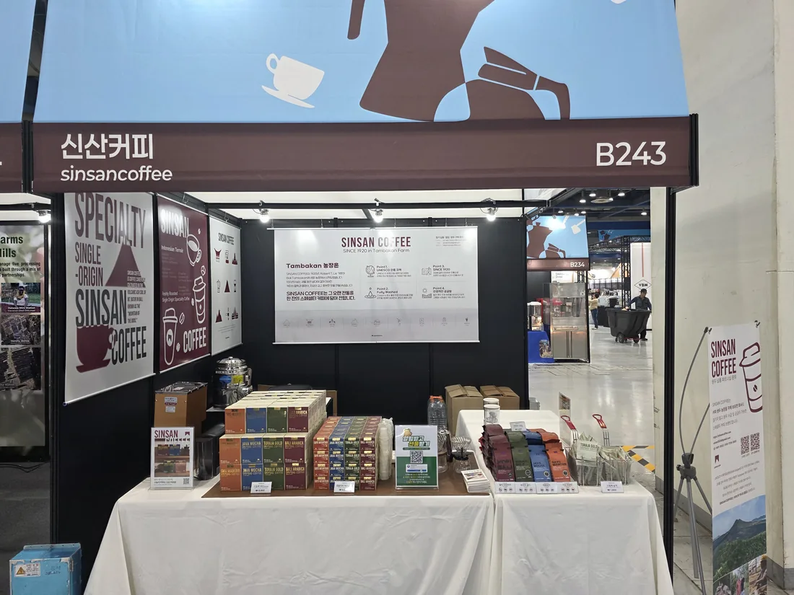

LOADING...
커피·화장품 브랜드 인하우스 마케터. 브랜드를 세우고, 온·오프라인에서 팔고, 구매 데이터로 확인했습니다.
검색 데이터, CRM 전략, 오프라인 접점 — 어디서든 숫자로 확인하는 방식은 같았습니다.
그중 하나는, 이렇게 확인했습니다.

실제 수치는 계약상 공개할 수 없어, 방향과 상대적 위치만 표시했습니다.
베스트셀러 한 곳에 몰려 있던 관심을, 매달 이어간 향 노트 캠페인으로 다른 카테고리와 향 노트까지 넓혔습니다.